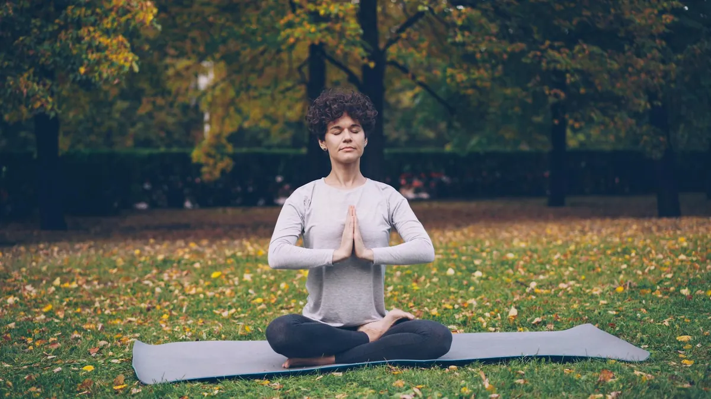

Tired of Burnout? Simple Daily Stress Management
Key takeaways
- I remember staring at my laptop screen, the cursor blinking mockingly.
- It was 7 PM, and I still had a mountain of work.
- Track what feels sustainable and adjust gradually.
I remember staring at my laptop screen, the cursor blinking mockingly. It was 7 PM, and I still had a mountain of work. My shoulders were tight, my head was pounding, and honestly, I felt like I was running on fumes. That was my wake-up call: I was deep in burnout, and something had to change. It wasn't about working harder; it was about working smarter and, more importantly, taking care of myself.
The pressure to constantly be 'on' is real, especially in the US workforce. We're told to hustle, to push through, but that path often leads straight to mental exhaustion and that awful feeling of being completely drained. I learned the hard way that **prevention is way better than cure**, and it starts with small, daily habits.
You just need to be tougher and push through the stress. Everyone feels this way sometimes, so it's just part of the job.
While stress is a normal part of life, chronic, unmanaged stress leads to burnout. Pushing through without breaks or self-care isn't toughness; it's a fast track to exhaustion and can impact your physical and mental health significantly. Recognizing your limits and actively managing stress is a sign of strength.
So, what can you actually *do* when you feel that familiar wave of dread creeping in? It’s not about grand gestures; it’s about tiny, consistent wins. I started incorporating a few simple practices into my day, and they made a world of difference.
The 2-Minute Win
Take 5 deep breaths, right now. Inhale slowly through your nose, hold for a second, and exhale completely through your mouth. Feel that slight shift? That’s your nervous system starting to calm down.
One of the biggest game-changers for me was understanding that **my mental energy is a finite resource**. I used to think I could just keep pouring from an empty cup, but that's a recipe for disaster. Learning to manage my workload and my internal responses was key. This includes setting boundaries, which is something I still work on!
It's okay to not be productive 100% of the time. Our brains need downtime to function optimally. Think of it like charging your phone – you wouldn't expect it to work on 1% battery, right? Your brain is the same.
I also found that focusing on my physical well-being directly impacted my mental resilience. Getting enough quality sleep, moving my body even for short bursts, and nourishing myself with good food are non-negotiables now. If you're looking for a related healthy tip, check out my insights on boosting your daily energy levels.
Sometimes, it feels like you're stuck in a cycle of stress. That's why having practical tools is so important. For instance, I've found that simple mindfulness exercises can really help ground me when I feel overwhelmed. You can explore another practical guide to mindfulness techniques that actually work.
Remember, **consistency trumps intensity**. It's better to do a little bit every day than to try and overhaul everything at once. This approach helped me to stay consistent with this stress-reduction plan I developed.
When I started prioritizing these small shifts, I noticed a significant reduction in my feelings of overwhelm. It wasn't an overnight fix, but gradually, I felt more in control and less like a victim of my circumstances. It’s a journey, and I’m still learning, but these steps have been foundational for my own wellness. For a similar wellness insight, you might find my thoughts on building healthy habits useful.
And if you're curious about exploring more guides related to stress management, you can explore more stress guides. It's all about finding what works for *you*.
Disclosure: This page may contain affiliate links.
Educational only — not medical advice.
More in stress

stressFeeling Stressed? Try These Nervous System Hacks
Discover practical, science-backed techniques to calm your nervous system and manage stress. Learn how to hack your stre
Read article → stress
stressFeeling Drained? Prevent Burnout with These Tips
Feeling overwhelmed and exhausted? Learn practical strategies to manage workplace stress and mental fatigue, and reclaim
Read article →Related posts
Feeling Stressed? Try These Nervous System Hacks
Discover practical, science-backed techniques to calm your nervous system and manage stress. Learn how to hack your stre
Read article →stressFeeling Drained? Prevent Burnout with These Tips
Feeling overwhelmed and exhausted? Learn practical strategies to manage workplace stress and mental fatigue, and reclaim
Read article →What Daily Routines Truly Lower Stress Levels?
Discover practical daily routines designed to effectively lower your stress load and improve your overall well-being. Le
Read article →